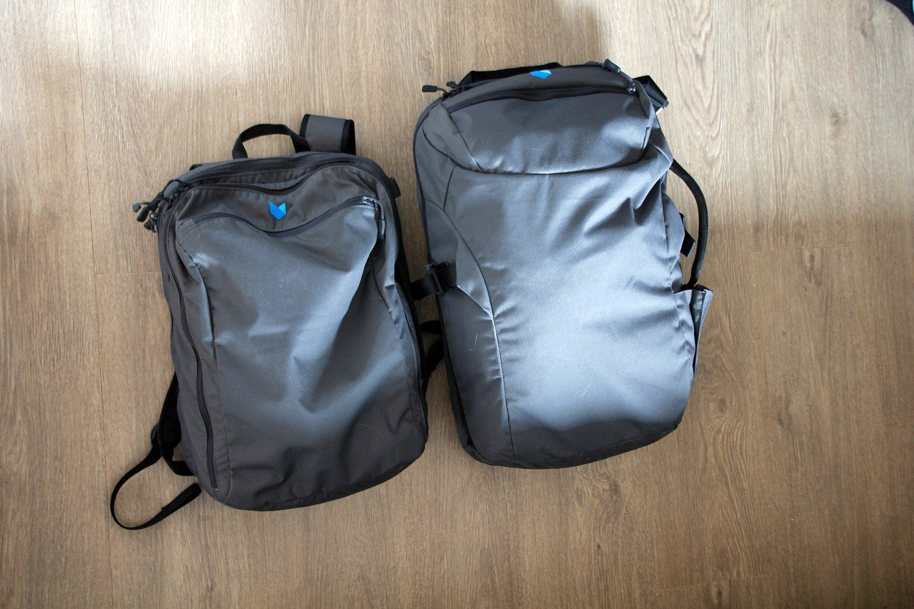

대만 여행 김치 기내 반입, 캔 볶음김치는 어떻게 챙길까?
작은 캔 하나 때문에 보안검색에서 버리는 일이 없도록 — 용기 기준과 대만 입국 때 더 조심할 점을 모았습니다.
게시
"볶음김치 캔 하나 정도는 가방에 넣어도 되겠죠?" 대만 여행 김치 기내 반입은 생각보다 까다로워요. 국물이나 양념이 있는 김치·고추장은 액체류로 보기 때문이에요. 인천공항과 대만 항공경찰국 안내, 실제 여행자들의 경험을 바탕으로 정리해봤어요.
01 · 기내 vs 위탁 한눈에 비교하기
| 기내 수하물 | 위탁 수하물 | |
|---|---|---|
| 김치·고추장 분류 | 액체류(국물·젤 형태) | 제한 없이 부칠 수 있음(인천공항 안내) |
| 용량 기준 | 용기당 100ml 이하, 1인 1L 투명 지퍼백 1개 | 항공사 무게 한도 안에서 |
| 캔 제품 | 100ml 넘는 캔은 내용물이 적어도 불가 | 밀봉·완충 포장 권장 |
| 대만 출국 때 | 같은 기준(용기당 100mL, 1L 지퍼백 1개) | 같음 |
02 · 대만 여행 김치 기내 반입, 캔은 용기 크기로 판단
100ml 기준은 남은 양이 아니라 용기에 적힌 용량이에요. 그래서 반쯤 먹은 큰 캔도 기내에는 못 들고 갑니다. 여행용 소포장 김치라도 용량 표시가 100ml를 넘으면 위탁 수하물로 보내는 게 안전해요.

03 · 대만 입국 때 더 조심할 것: 돼지고기
성분표부터 확인 볶음김치나 김치찌개 캔에 돼지고기가 들어 있으면 대만 반입 금지 품목이에요. 가열·통조림 제품도 마찬가지예요.
벌금이 매우 커요 돼지고기 제품을 신고 없이 들여오면 첫 위반에도 NT$200,000 벌금이 부과되고(2026년 9월 기준), 외국인이 바로 내지 못하면 입국이 거부될 수 있어요.
자진 신고함 이용 도착 후 짐에 해당 제품이 있다는 걸 알았다면 입국 심사 전에 있는 자진 신고함(폐기함)에 버리세요.

04 · 짐 싸기 요령
위탁 가방에 넣기 캔·병은 지퍼백으로 한 번 싸고 옷 사이에 넣으면 새는 걸 막을 수 있어요.
소포장은 지퍼백에 100ml 이하 소포장만 기내용 1L 지퍼백에 넣으세요.
성분표 사진 찍기 돼지고기 여부를 빠르게 확인할 수 있게 미리 찍어두면 편해요.
"김치는 위탁, 고기 들어간 캔은 아예 빼기." — 대만에 반찬을 챙겨 간 여행자들이 자주 하는 말을 요약했습니다.
현지 음식이 입에 맞을지 걱정이라면 타이베이 대만식 맛집에서 익숙한 맛의 메뉴부터 골라보세요. 한식이 그리울 때를 위해 화롄 한식당 韓食倉庫처럼 지도에 등록된 한식당도 있어요. 도시별 식당은 타이베이 맛집 지도에서 볼 수 있어요.
지도에서 타이베이 맛집을 먼저 찾아보세요
현지 음식이 걱정된다면 입맛에 맞을 만한 타이베이 식당을 지도에서 미리 골라보세요.